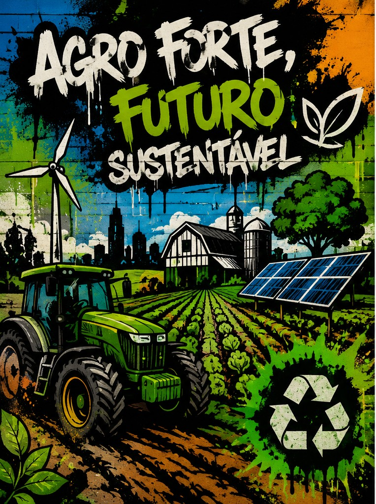
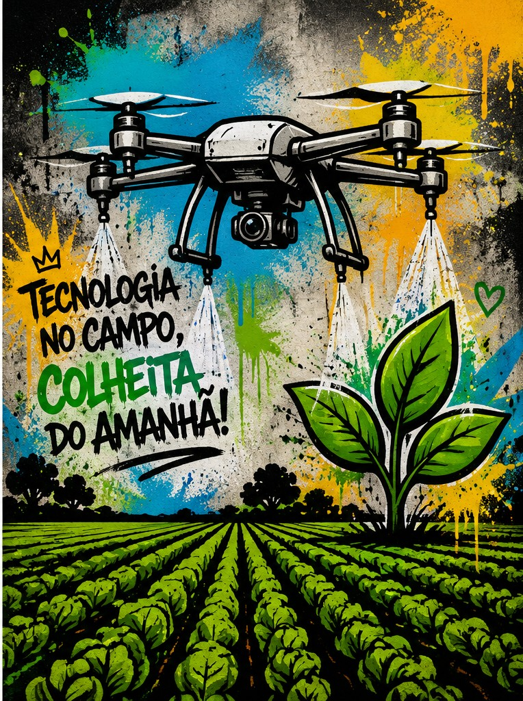

Milhões de toneladas de grãos produzidas por ano.
Pessoas empregadas direta e indiretamente pelo agronegócio.
% de participação do agronegócio no PIB brasileiro.

O agronegócio brasileiro é um dos mais modernos do mundo. A tecnologia tornou possível produzir mais alimentos, reduzir desperdícios e preservar recursos naturais.
Sensores, GPS, inteligência artificial, imagens de satélite e softwares permitem monitorar toda a lavoura em tempo real, reduzindo desperdícios e aumentando a produtividade.
Os drones identificam pragas, doenças, falhas no plantio e ajudam o produtor a tomar decisões rápidas e precisas.
Sensores de umidade fornecem apenas a quantidade necessária de água para cada área da plantação, economizando recursos.
Sistemas inteligentes analisam milhares de informações para prever clima, produtividade e possíveis doenças nas plantações.
Imagens de satélite permitem acompanhar grandes áreas, detectar problemas rapidamente e melhorar o planejamento agrícola.
Tratores e colheitadeiras modernos trabalham com alta precisão, reduzindo custos, aumentando a eficiência e diminuindo impactos ambientais.
A conservação do solo garante uma agricultura mais produtiva e sustentável. Técnicas como plantio direto, rotação de culturas e cobertura vegetal reduzem a erosão, preservam nutrientes e aumentam a fertilidade do solo.
A energia solar, eólica e o biogás permitem que propriedades rurais reduzam custos, diminuam a emissão de gases poluentes e produzam energia limpa para suas atividades.
O uso responsável dos recursos naturais, aliado às novas tecnologias, reduz desperdícios, protege rios, preserva a biodiversidade e melhora a qualidade da produção agrícola.
Sensores de umidade, irrigação automatizada e monitoramento climático ajudam a economizar milhares de litros de água durante cada safra.
A preservação das áreas nativas protege animais, nascentes, regula o clima e mantém o equilíbrio ambiental necessário para uma agricultura saudável.
A sustentabilidade fortalece a relação entre produtores e consumidores, garantindo alimentos de qualidade para toda a população.
O desmatamento compromete a biodiversidade, reduz a disponibilidade de água e contribui para o aquecimento global. A produção sustentável busca aumentar a produtividade sem ampliar áreas desmatadas.
O desperdício de água pode afetar rios, nascentes e ecossistemas. Tecnologias modernas tornam a irrigação muito mais eficiente.
Máquinas mais eficientes, energias renováveis e práticas sustentáveis ajudam a reduzir as emissões de gases do efeito estufa.
Eventos extremos, como secas e chuvas intensas, exigem planejamento e tecnologias capazes de proteger a produção agrícola.
A proteção de animais, plantas e polinizadores é essencial para manter o equilíbrio dos ecossistemas agrícolas.
O maior desafio é produzir cada vez mais alimentos utilizando menos recursos naturais, conciliando tecnologia e sustentabilidade.

A Inteligência Artificial permite prever pragas, analisar o clima, otimizar colheitas e aumentar a produtividade com menor impacto ambiental.
Sensores e satélites acompanham as plantações continuamente, permitindo decisões rápidas e mais eficientes.
A conscientização da população é fundamental para garantir um futuro sustentável, unindo tecnologia, preservação e produção.